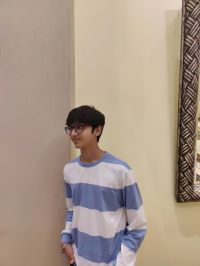

Nishank Shah
shahnishank05@gmail.com|Contact no: 9819122065

Education:
- Mukesh Patel Scchool of Engineering, Technology & Management (2022-current)
Btech in Computer Engineering
- NKES, Mumbai (2019-2022)
Courses:
- Blockchain-foundation and use cases (Coursera)
- Microsoft Excel (Basic to Advanced) (Udemy)
- Python 3 Programming Specialization (University of Michigan)
- Python Programming (University of Wesleyan) (Coursera)
- Diabetes (University of Copenhagen) (Coursera)
Skills:
- Microsoft Excel
- Python
- C++
- HTML
- CSS
Community Service:
- Earth Angels Welfare foundation, Mumbai, India
- Helped manage Database.
- Distribution of relief to villages around Mumbai
- "Sunday Friends" ,Mumbai, India
- Volunteered to help with food supply for the underprivileged ward in Sion Hospital
Extra Curriculars:
- Sattva (Annual Festival of Mukesh Patel College)
- Volunteered in the Department of Guest Artist management
- Intra-mun (MUN of Mukesh Patel School)
- Volunteered as a member of the Rajya Sabha
- Drums
Interests:
Art, Writing, Reading, Music, Films, Football